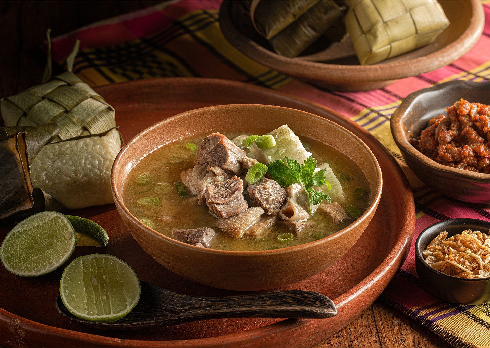

Home
Coto Makassar Recipes

What is coto makassar?
Coto Makassar or Pallu coto mangkasarak is a traditional dish of the Makassar tribe, South Sulawesi.
This food is made from beef offal that is boiled for a long time. Generally,
Coto Makassar is served in a bowl and enjoyed with ketupat (rice cake).
Coto Makassar is usually made with 40 spices, and is sold separately,
depending on whether the consumer chooses a mix of offal and meat, offal only, or meat only.
Ingredients
- 1 kg Beef
- 25 Shallots
- 10 cloves of Garlic
- 1 nutmeg
- Cumin to taste
- 1/2 teaspoon Pepper
- Coriander
- Salt
- Brown sugar to taste
- Peanuts
- Green onions
- 2 stalks of Lemongrass
- Bay leaves
- Cinnamon
- Lime leaves
- Water as needed
- Oil as needed
- Galangal
- Ginger
- Lime
How to make coto makassar
- Boil the meat with rice water so the meat softens quickly,
then add lemongrass, bay leaves, cinnamon, galangal, and lime leaves.
- After boiling, cut the meat into cubes, then fry the peanuts in oil, remove and drain.
- After that, fry 10 cloves of sliced shallots, then sauté 15 cloves of shallots mixed with oil
along with 10 cloves of garlic, coriander, nutmeg, cumin, salt, pepper, and ginger that have
been cut, until fragrant.
- Blend the peanuts and palm sugar together, blend it somewhat coarsely.
- After that, blend the sautéed coto spices together.
- Add the coto spices, the blended peanuts, and the cubed meat to the meat boiling water, cook until boiling, and add salt to taste.
- Serve with green onions, fried shallots, lime, and chili sauce... it's more delicious, especially when it rains. Enjoy.